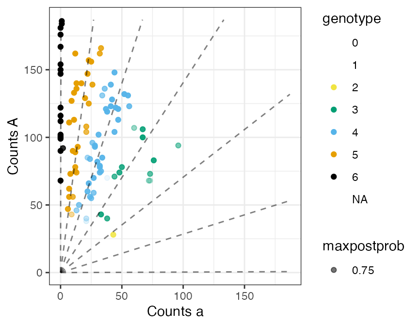

Simulate Next-Generation Sequencing Data
David Gerard
Source:vignettes/simulate_ngs.Rmd
simulate_ngs.RmdAbstract
We demonstrate how to simulate NGS data under various genotype
distributions, then fit these data using flexdog. The
genotyping methods are described in Gerard et al. (2018).
Analysis
Let’s suppose that we have 100 hexaploid individuals, with varying levels of read-depth.
set.seed(1)
library(updog)
nind <- 100
ploidy <- 6
sizevec <- round(stats::runif(n = nind,
min = 50,
max = 200))We can simulate their read-counts under various genotype
distributions, allele biases, overdispersions, and sequencing error
rates using the rgeno and rflexdog
functions.
F1 Population
Suppose these individuals are all siblings where the first parent has
4 copies of the reference allele and the second parent has 5 copies of
the reference allele. Then the following code, using rgeno,
will simulate the individuals’ genotypes.
true_geno <- rgeno(n = nind,
ploidy = ploidy,
model = "f1",
p1geno = 4,
p2geno = 5)Once we have their genotypes, we can simulate their read-counts using
rflexdog. Let’s suppose that there is a moderate level of
allelic bias (0.7) and a small level of overdispersion (0.005).
Generally, in the real data that I’ve seen, the bias will range between
0.5 and 2 and the overdispersion will range between 0 and 0.02, with
only a few extremely overdispersed SNPs above 0.02.
refvec <- rflexdog(sizevec = sizevec,
geno = true_geno,
ploidy = ploidy,
seq = 0.001,
bias = 0.7,
od = 0.005)When we plot the data, it looks realistic
plot_geno(refvec = refvec,
sizevec = sizevec,
ploidy = ploidy,
bias = 0.7,
seq = 0.001,
geno = true_geno)
We can test flexdog on these data
fout <- flexdog(refvec = refvec,
sizevec = sizevec,
ploidy = ploidy,
model = "f1")
#> Fit: 1 of 5
#> Initial Bias: 0.3678794
#> Log-Likelihood: -363.9369
#> Keeping new fit.
#>
#> Fit: 2 of 5
#> Initial Bias: 0.6065307
#> Log-Likelihood: -363.937
#> Keeping old fit.
#>
#> Fit: 3 of 5
#> Initial Bias: 1
#> Log-Likelihood: -363.9369
#> Keeping new fit.
#>
#> Fit: 4 of 5
#> Initial Bias: 1.648721
#> Log-Likelihood: -381.6123
#> Keeping old fit.
#>
#> Fit: 5 of 5
#> Initial Bias: 2.718282
#> Log-Likelihood: -412.8604
#> Keeping old fit.
#>
#> Done!flexdog gives us reasonable genotyping, and it
accurately estimates the proportion of individuals mis-genotyped.
plot(fout)
## Estimated proportion misgenotyped
fout$prop_mis
#> [1] 0.07011089
## Actual proportion misgenotyped
mean(fout$geno != true_geno)
#> [1] 0.05HWE Population
Now run the same simulations assuming the individuals are in Hardy-Weinberg population with an allele frequency of 0.75.
true_geno <- rgeno(n = nind,
ploidy = ploidy,
model = "hw",
allele_freq = 0.75)
refvec <- rflexdog(sizevec = sizevec,
geno = true_geno,
ploidy = ploidy,
seq = 0.001,
bias = 0.7,
od = 0.005)
fout <- flexdog(refvec = refvec,
sizevec = sizevec,
ploidy = ploidy,
model = "hw")
#> Fit: 1 of 5
#> Initial Bias: 0.3678794
#> Log-Likelihood: -377.9226
#> Keeping new fit.
#>
#> Fit: 2 of 5
#> Initial Bias: 0.6065307
#> Log-Likelihood: -377.9226
#> Keeping old fit.
#>
#> Fit: 3 of 5
#> Initial Bias: 1
#> Log-Likelihood: -377.9226
#> Keeping old fit.
#>
#> Fit: 4 of 5
#> Initial Bias: 1.648721
#> Log-Likelihood: -377.9226
#> Keeping new fit.
#>
#> Fit: 5 of 5
#> Initial Bias: 2.718282
#> Log-Likelihood: -377.9226
#> Keeping old fit.
#>
#> Done!
plot(fout)
## Estimated proportion misgenotyped
fout$prop_mis
#> [1] 0.07625987
## Actual proportion misgenotyped
mean(fout$geno != true_geno)
#> [1] 0.07
## Estimated allele frequency close to true allele frequency
fout$par$alpha
#> [1] 0.7473264References
Gerard, David, Luís Felipe Ventorim Ferrão, Antonio Augusto Franco Garcia, and Matthew Stephens. 2018. “Genotyping Polyploids from Messy Sequencing Data.” Genetics 210 (3). Genetics: 789–807. https://doi.org/10.1534/genetics.118.301468.